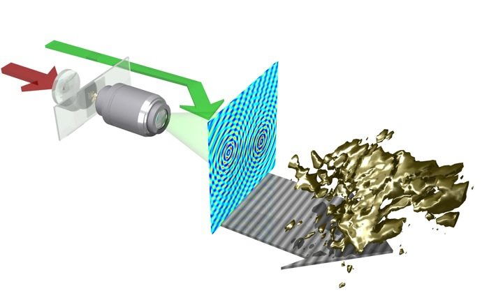

Illustrations of scientific experiments and results.
3D POV-Ray / Blender

Holographic microscopy and object reconstruction.

Electron and ion imaging of single atom photoionization.

Experimental setup of difference frequency generation.

Synthetic aperture experiment to measure vibrational motion.

Experimental setup of cross beam spectrometer.

Exploded assembly view of optical fiber end cap.

Third-harmonic generation microscopy with photomultiplier detector.
3D OpenGL

Visual representation of electric field projections.

Tabletop laser assembly.

3D fractal tree generation.
Line art

Second-hardmonic generation and interference in birefringent crystal.

Light pulse electric field projections.

Measurement of phase response of liquid crystal using interference.
Animations
Animation showing the recording of three dimensional structures using
second harmonic generation microscopy. The object can subsequently be
reconstructed from the recorded interference fringes.
Rendered in Blender.
Animation showing ion and electron spectroscopy of
single atom photoionization (COLTRIMS). The momentum of
each fragment is recorded via time-of-flight measurements,
which allows the ionization event to be reconstructed.
Rendered using POV-Ray (a long time ago).
Animation illustrating three chromosomes
in a cell undergoing mitosis.
Rendered in Blender.
DNA strand and the start of its assembly into chromosomes.
The animation is not intended to be scientifically accurate,
solely to indicate the vast quantity of individual elements
that make up DNA.
Illustration of neurons exchanging information. Rendered in Blender.
Rendering of nucleosome and DNA strand.
The structural data was taken from the,
Protein Data Bank.
This was a project to build a custom protein viewer at a time when
the availability of such viewers was more limited.
Rendered using C++ and OpenGL.
Whimsical instrument playing The Flight of the Bumblebee.
The clip was created programmatically by defining the
trajectory of a single note, and animating the complete set
using a MIDI file.